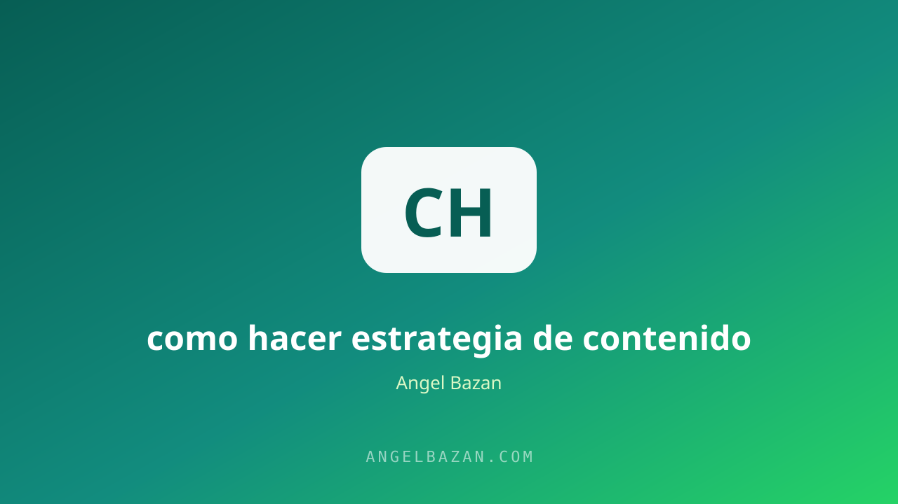

Estrategia de contenido para WhatsApp: el canal que más convierte
Publicar en redes llena de me gusta; publicar en WhatsApp llena de ventas. Esta es la estrategia de contenido que convierte audiencia en conversación y conversación en facturación.
En este artículo
El contenido ha sido el rey de las redes durante años, pero en 2026 el trono se disputa: el canal que más convierte es WhatsApp. No es opinión, es física del marketing: donde hay atención personal, hay respuesta; y donde hay respuesta, hay venta. Mientras tus competidores pelean por el alcance orgánico de Instagram, tú puedes estar teniendo conversaciones reales con los mismos prospectos en una app que abren 30 veces al día.
El problema no es que la gente no quiera recibir tu contenido por WhatsApp; es que casi nadie tiene una estrategia. Publican ofertas sueltas, spamean listas de difusión y se preguntan por qué nadie les responde. La clave está en entender que WhatsApp no es un altavoz: es una sala de conversación. Esta guía te da el sistema completo para que tu contenido de WhatsApp genere leads, citas y ventas de forma predecible.

Por qué WhatsApp convierte más que cualquier red
En las redes, tu contenido compite contra un feed infinito y un algoritmo que decide quién te ve. En WhatsApp, tu mensaje llega con notificación, en el chat donde ya está tu contacto, y con el contexto de una relación personal. La tasa de apertura de una lista de difusión bien gestionada supera con facilidad el 70%, cuando el email promedio apenas roza el 20%. La diferencia no es el mensaje: es el canal. Y sobre un canal así, construido como se debe, se monta el funnel de WhatsApp desde cero que convierte tráfico en facturación.
Los 3 tipos de contenido que sostienen tu estrategia
- Contenido de valor puro: tips, datos, mini-tutoriales que resuelven un problema en 30 segundos. Este construye confianza y hace que tu contacto nunca bloquee tu número.
- Contenido de prueba social: casos de clientes, resultados reales, capturas de pantalla. Es el combustible que convierte "me interesa" en "quiero comprar".
- Contenido de oferta: promociones, lanzamientos y CTAs claros. En el equilibrio correcto (80% de los dos primeros, 20% de este), no molesta: persuade.
Esta misma lógica de "valor primero, venta después" es la que explica cómo crear contenido que venda en cualquier canal; WhatsApp simplemente la amplifica porque la conversación está a un toque de distancia.
Cómo estructurar la semana de contenido
La improvisación mata la constancia. Una semana tipo con tu lista de difusión puede verse así: lunes, tip rápido de valor; miércoles, caso de éxito o testimonio; viernes, contenido de oferta o recordatorio suave. Tres toques semanales, en los mismos horarios, crean expectativa sin saturar. Y para no depender de la memoria, planifica todo con el calendario de contenidos y llévalo al calendario de tu teléfono.
Si ya publicas en Instagram o TikTok, no empieces desde cero: adapta tu mejor reel del mes a 3 mensajes de WhatsApp con un mismo hilo narrativo. El contenido que ya funcionó en público tiene el doble de probabilidades de funcionar en privado, porque viene validado por datos. Esta técnica de reciclaje multiplica tu producción sin multiplicar tu trabajo, y mantiene la calidad alta mientras el volumen crece.
De la lista de difusión a la venta conversacional
La lista de difusión abre la puerta, pero la venta se cierra en el chat privado. Cuando alguien responde a tu contenido, el juego cambia: dejas de transmitir y empiezas a conversar. Ahí aplicas la secuencia de calificación (preguntas, necesidades, presupuesto) y llevas al prospecto hacia tu oferta. La regla de oro es que cada pieza de contenido de WhatsApp termine con una pregunta o un CTA que invite a responder, porque cada respuesta es un lead caliente esperando por ti. Los pasos exactos de esa secuencia están en cómo ganar dinero por WhatsApp.
En lugar de cerrar con un "cualquier consulta me escriben", termina con una pregunta concreta ("¿Con cuál de los dos escenarios te identificas más?") que invite a responder. Cada respuesta es un gancho de conversación: ahí evalúas el interés, resuelves la objeción y presentas la oferta solo cuando hay intención. Así la lista de difusión deja de ser un canal de comunicación y se convierte en una máquina de ventas conversacional que trabaja para ti.
El papel de la IA en tu calendario
La IA no te reemplaza: te hace producir 10 veces más rápido. Úsala para generar 20 ideas de tips a partir de tu oferta, para convertir un reel que funcionó en 5 mensajes de WhatsApp, o para escribir variantes de tu mensaje de oferta y elegir la mejor. La combinación ganadora es IA para producir + tú para personalizar: el toque humano final en un chat de WhatsApp es lo que marca la diferencia. El flujo completo de automatización está en automatizar WhatsApp con IA.
Para que la IA trabaje a favor de tu lista, dale contexto: cuéntale tu oferta, tu público y el resultado que entregas, y pídele 10 mensajes de máximo 3 líneas cada uno, cerrando con una pregunta. La brevedad es la regla de oro del formato: un mensaje largo en WhatsApp se salta; uno corto con una pregunta se responde. Ese es el estándar que separa una difusión efectiva de un spam más.
Las métricas que debes mirar cada semana
- Tasa de respuesta: cuántos contactos responden a tu difusión. Si cae, tu contenido no conecta.
- Conversaciones cerradas: cuántas respuestas se convirtieron en venta o cita. Aquí vive tu ROI real.
- Bloqueos y bajas: el termómetro de saturación. Si suben, reduce la frecuencia.
Con estos tres números puedes decidir qué piezas repetir y cuáles descartar. Y si además alimentas la lista con tráfico pagado desde Meta Ads, cada difusión trabaja sobre una audiencia cada vez más grande: el sistema completo se explica en cómo vender más con Meta Ads y la secuencia de seguimiento lista para copiar está en nuestro generador de secuencias.
Preguntas frecuentes
¿Cuántas veces por semana debo enviar contenido a mi lista? Entre 2 y 4 envíos semanales es el rango saludable. Más de 5 y empezarás a ver bloqueos; menos de 1 y te olvidarán.
¿Debo usar lista de difusión o grupos? Lista de difusión para contenido masivo (no expone los números de nadie) y chat privado para cerrar ventas. Los grupos solo cuando el valor y la moderación lo justifiquen.
¿La IA puede redactar mis mensajes de WhatsApp? Sí, y bien: pídele ángulos, tonos y variantes cortas. Pero revisa y personaliza siempre; en WhatsApp lo que vende es la sensación de que hay una persona del otro lado.

Angel Bazán
Especialista en funnels, Meta Ads y WhatsApp + IA. Ayudo a negocios a vender más combinando tráfico pagado con conversaciones automatizadas.
Conoce más sobre mí →Aprende a crear y vender productos digitales con Meta Ads, WhatsApp e IA
Clases en vivo, estrategias y recursos para construir tu sistema desde cero. 🚀
Únete gratis al grupo